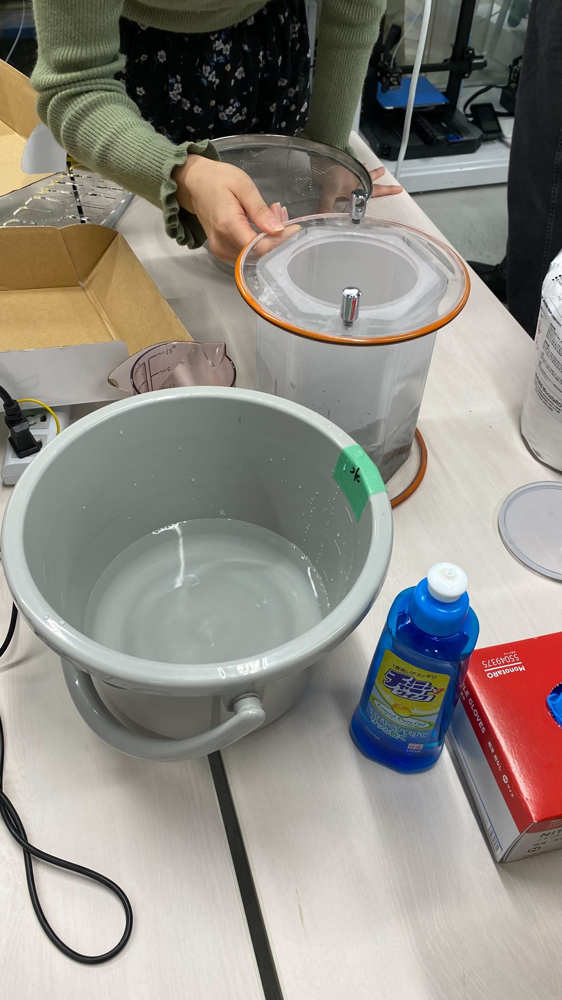
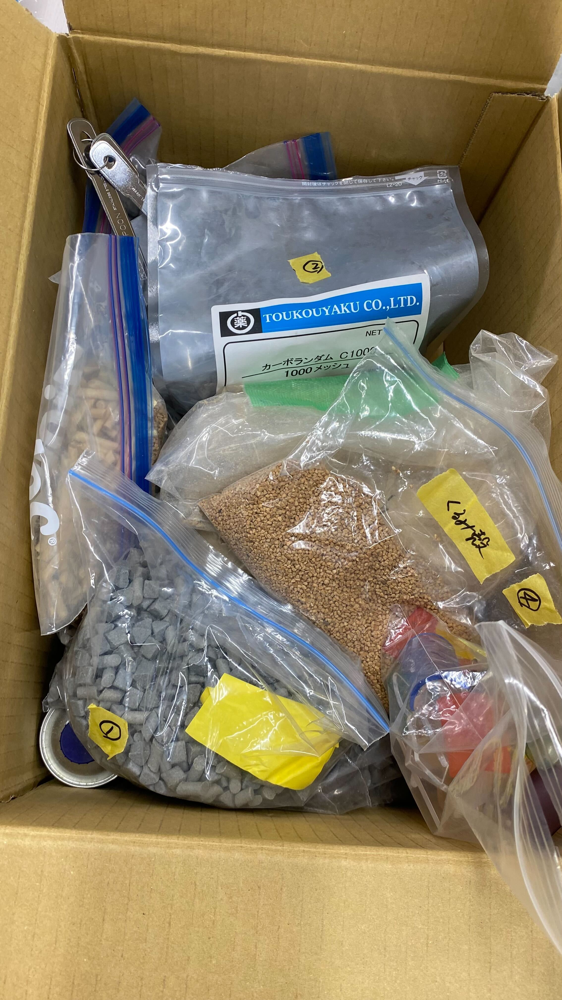
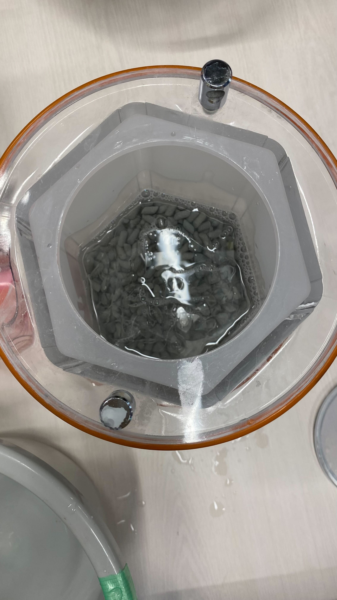
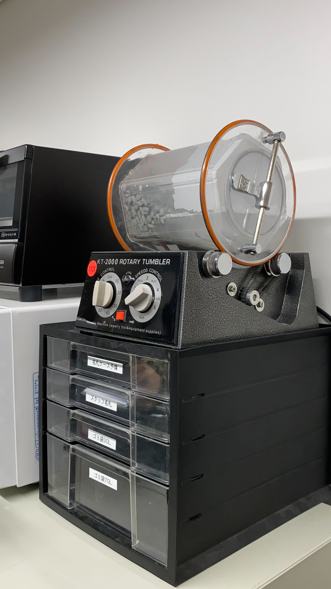
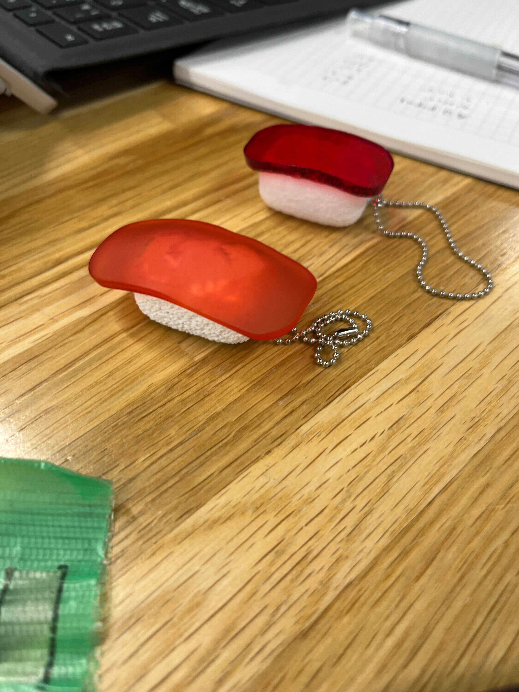
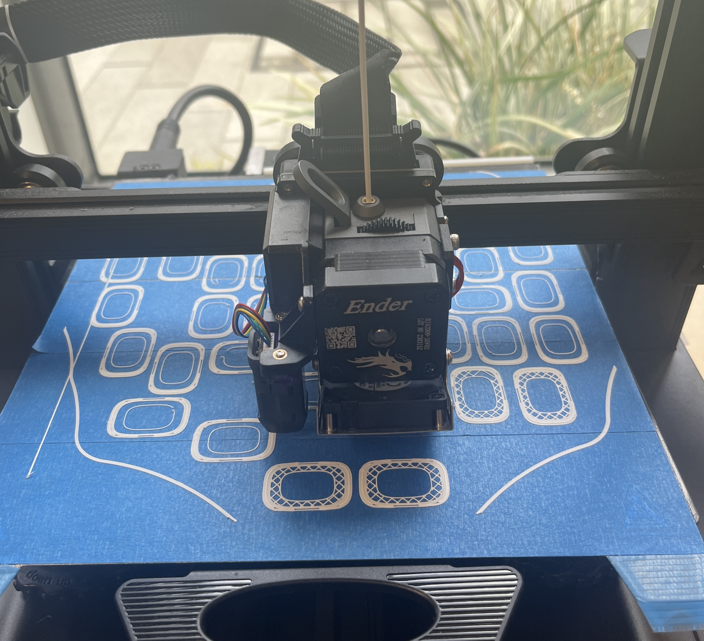
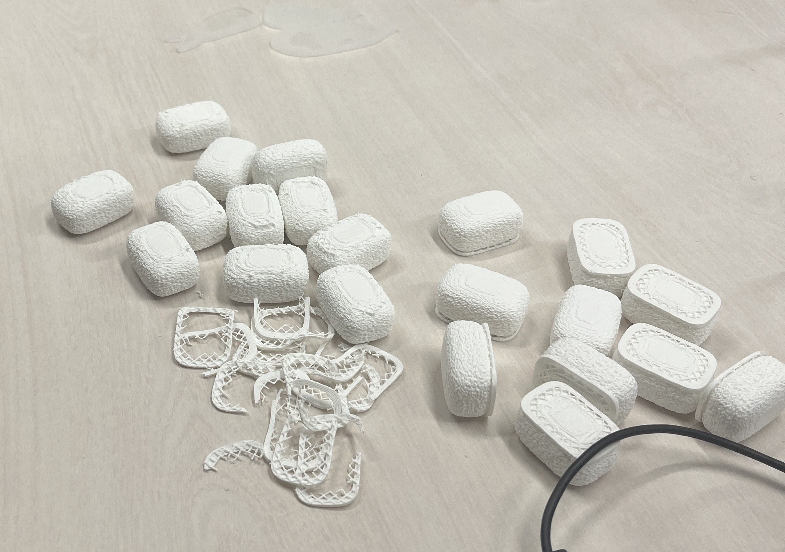
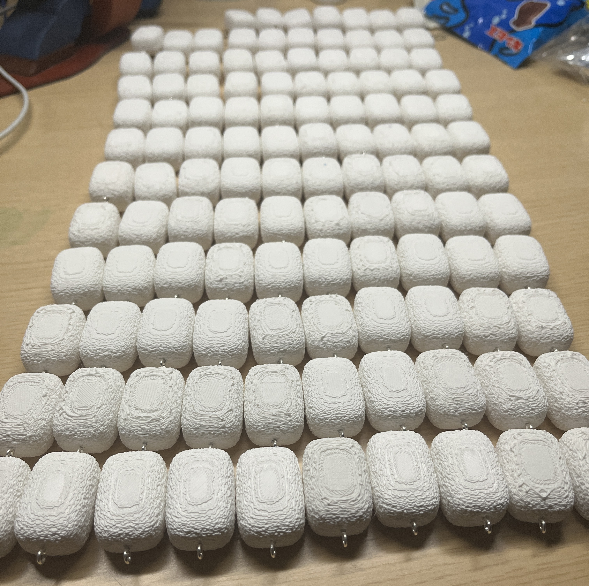

製作偏！
pura sushiを販売するために握る
今回販売するにあたって、前回のすしの握り方をマイナーチェンジ！
↓前回の作り方↓
ネタの作り方
シャリの握り方
----------------------------------------------------------------------------------------
新・ネタの作り方！
今回は新しい道具の「バレル研磨機」を導入！
バレル研磨機とは…
砂や石のようなものを使って、洗濯機のように回転をすることで研磨する機械である。
研磨する回数によって研磨材が異なる。レベル4(四度回す)だと元のきれいな透明度にかなり近づく
手順(レベル1のやり方)
- 水、洗剤、研磨剤2種を用意する

- 研磨剤、アクリル板を入れて、水を容器の半分ほどになるように入れ、洗剤を1,2周回し入れる。
研磨するアクリル板が少なかったり多かったりすると均等に研磨されないため注意！

- バレル研磨機に、最低24時間回転作業にかける

そうしてネタを研磨することで半透明に加工！

半透明にすることで色の入りが自然になった！
前回との比較

----------------------------------------------------------------------------------------
新・シャリの作り方！
今回はマットな質感の３Dプリンターのフィラメントを購入！
その結果、アクリルデザインアワードの時よりもリアルな質感のものに仕上がった！

前回との比較

共同制作者のサイト↓
rei37